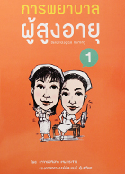

ตำราวิชาการ
ทักษะพื้นฐานทางการพยาบาล 1

ตำราวิชาการ
พยาธิสรีรวิทยาทางการพยาบาล
(Pathophysiology in Nursing)
(Pathophysiology in Nursing)

ตำราวิชาการ
การพยาบาลผู้สูงอายุ 1

ตำราวิชาการ
การบริหารการพยาบาล ยุค 4 G Plus

ปี 2557
การดูแลผู้สูงอายุแบบบูรณาการ
ปี 2554
ศาสตร์และศิลป์ การพยาบาลผู้สูงอายุ